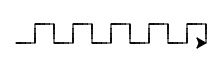

6.1. Корњача графика - вежбање¶
Након неколико часова на којима смо уводили нове концепте, време је да направимо малу паузу и искористимо време да проверимо колико смо до сада научили (твој наставник може да ти да контролни задатак или петнаестоминутну проверу знања из области програмирања Карела и корњаче). Спремили смо неколико задатака за вежбу из области корњача-графике који ће ти помоћи да провериш своје знање. Додатне задатке за вежбу можеш пронаћи овде.
Задаци за вежбу¶
Линијски програми¶

Дијамант¶
Напиши програм у којем корњача исцртава облик дијаманта (облик се добије спајањем два једнакостранична троугла по заједничкој хоризонталној ивици).
Петље¶
Квадратни сигнал¶
Напиши програм у којем корњача црта облик квадратног сигнала, као на следећој слици.
Основни корак у решавању задатка је да се овај сложени облик разложи на низ једноставнијих облика који се понављају. Покушај прво да размислиш како то може да се уради, а онда погледај наредну слику.
Дакле, облик се састоји од пет понављања основног облика, који се може добити тако што корњача иде напред, затим се окрене налево, иде напред, окрене се надесно, иде напред, опет се окрене надесно, иде напред и окрене се налево (увек се окреће за по 90 степени).
За вежбу прилагоди програм тако да се димензије облика лако мењају (уведи променљиве које представљају дужину и ширину основног облика).
Тестерица¶
Напиши програм којим корњача црта тестерицу са 10 зубаца. Угао при врху сваког зупца треба да буде 45 степени, а размак између два суседна зупца 25 корака (покушај да на основу тога одредиш дужину косих линија које се цртају).
Насумично кретање¶
Напиши програм којим се корњача насумично креће по екрану. У сваком кораку иде напред између 20 и 40 пиксела, а затим се окреће насумично налево између 0 и 360 степени.
Насумично одабран број из интервала \([a, b]\) можеш добити помоћу random.randint(a, b).
Насумично кретање - окрети у оба смера¶
Исправи претходни програм тако да се корњача и налево и надесно (никада више од 180 степени).
Плус¶
Напиши програм којим корњача исцртава плус (сваки од четири крака плуса је дугачак 50 корака).
У сваком кораку корњача може да оде напред 50 пиксела, да се се врати назад 50 пиксела и да се окрене за 90 степени.
Осмокрака звезда¶
Модификуј претходни програм тако да се црта звездица која има 8 кракова дужине од по 50 корака.
n-токрака звезда¶
Напиши програм на основу којег корњача црта звездицу која се састоји од \(n\) кракова дужине 50 корака, равномерно распоређених у круг (сваки крак креће из центра).
Парни и непарни кракови различите дужине¶
Модификуј претходни програм тако да је сваки други крак краћи (дугачак 30 корака).